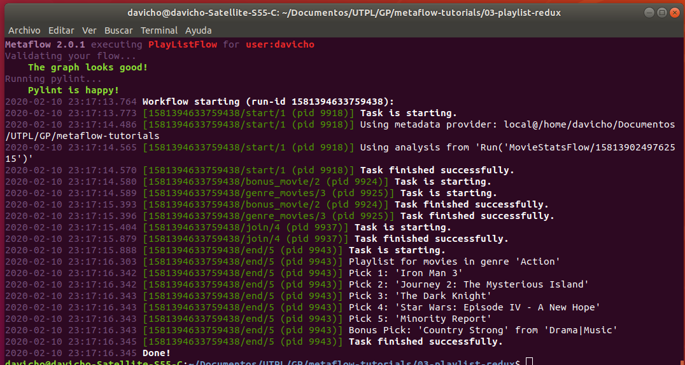

from metaflow import FlowSpec, step, Parameter
Se procede a importar los modulos a utilizar desde Metaflow
class PlayListFlow(FlowSpec): # Herencia de FlowSpec
genre = Parameter('genre',
help="Filter movies for a particular genre.",
default='Action')
recommendations = Parameter('recommendations',
help="The number of movies recommended for "
"the playlist.",
default=5)
Los parametros se definen asignandolos a una variable global. En estos se detalla el nombre del parametro, una descripcion bajo la sintaxis help="...", ademas del valor por defecto, el cual puede ser el tipo de variable(int, String) o un dato en especifico(action).
Cada "step" esta antecedido por el decorador de Python @
@step
def start(self):
from metaflow import Flow, get_metadata
# Print metadata provider
print("Using metadata provider: %s" % get_metadata())
# Load the analysis from the MovieStatsFlow.(Ejercicio 02 clase MovieStatsFlow)
run = Flow('MovieStatsFlow').latest_successful_run
print("Using analysis from '%s'" % str(run))
self.genre_stats = run.data.genre_stats
# Compute our two recommendation types in parallel.
self.next(self.bonus_movie, self.genre_movies)
En step start se comienza utilizar el "Metaflow Client" para recuperar la ultima ejecución exitosa de MovieStatsFlow
En el metodo self.next se ejecutan pasos paralelos a travez de ramas.
@step
def bonus_movie(self):
import pandas
# Concatenar todos los generos de peliculas para escoger una
df = pandas.concat([data['dataframe'] \
for genre, data in self.genre_stats.items() \
if genre != self.genre.lower()])
df = df.sample(n=1) # Se utiliza el sample n=1 para que retorne solo una fila del df
self.bonus = (df['movie_title'].values[0],
df['genres'].values[0])
self.next(self.join)
El step bonus_movie selecciona aleatoriamente una pelicula que sea de un genero diferente para añadirla al resultado final.
Esto se realiza mediante la implementacion de la libreria pandas y la funcion sample, la cual es similar al random y permite retornar una o varias filas aleatorias del df
Luego de esto apunta al siguiente paso que es el step join
@step
def genre_movies(self):
from random import shuffle
# For the genre of interest, generate a potential playlist using only
# highest gross box office titles (i.e. those in the last quartile).
genre = self.genre.lower()
if genre not in self.genre_stats:
self.movies = []
else:
df = self.genre_stats[genre]['dataframe'] # se le asigna del genre_stats en la llave genre, dentro de genre la llave dataframne
quartiles = self.genre_stats[genre]['quartiles']
selector = df['gross'] >= quartiles[-1] # -1 es la ultima posicion
self.movies = list(df[selector]['movie_title']) # lista de los titulos de peliculas
# Shuffle the playlist.
shuffle(self.movies)
self.next(self.join)
El step genre_movies selecciona las peliculas mas taquilleras del data frame y que coincidan con el genero especificado.
Al final se aleatorizan las peliculas de la lista y se apunta al step join
@step
def join(self, inputs):
self.playlist = inputs.genre_movies.movies
self.bonus = inputs.bonus_movie.bonus
self.next(self.end)
En el step join se une la informacion obtenida en paralelo y se la reasigna a las variables correspondientes para ser invocadas en el paso final
@step
def end(self):
"""
Print out the playlist and bonus movie.
"""
# Print the playlist.
print("Playlist for movies in genre '%s'" % self.genre)
for pick, movie in enumerate(self.playlist, start=1):
print("Pick %d: '%s'" % (pick, movie))
if pick >= self.recommendations:
break
print("Bonus Pick: '%s' from '%s'" % (self.bonus[0], self.bonus[1]))
Imprimir la lista de peliculas segun el numero requerido y el genero proporcionado. En el presente ejemplo se requieren 5 peliculas del genero accion
if __name__ == '__main__':
PlayListFlow()
Sentencia para empezar la ejecucion del programa
